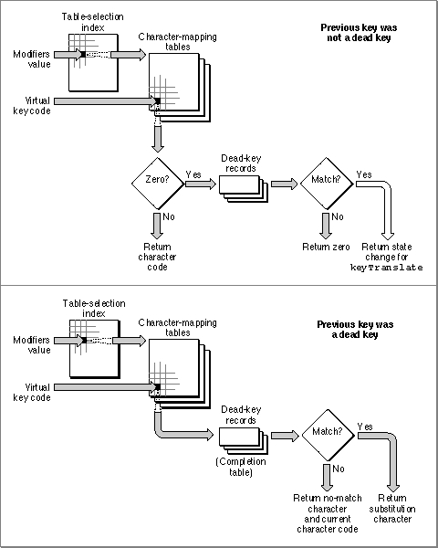

Legacy Document
Important: The information in this document is obsolete and should not be used for new development.
Important: The information in this document is obsolete and should not be used for new development.


The KeyTranslate Function and the Keyboard-Layout Resource
During the process of key translation, the Event ManagerKeyTranslatefunction applies the virtual key code and the state of the modifier keys to the keyboard-layout resource to determine a character code. Table C-2 on page C-6 shows the meanings of the keyboard modifier bits in the high-order byte of themodifiersfield of an event record (defined by theEventRecorddata type). TheKeyTranslatefunction uses the byte value determined by the settings of these bits to control the selection of tables in the keyboard-layout resource.Figure C-7 gives an overview of how the parts of the keyboard-layout resource are
used. It starts when the user presses a key or combination of keys, and the Event Manager passes the virtual key code and the state of the modifier keys to theKeyTranslatefunction:
As far as your application is concerned, no event is generated by pressing a dead key. The only information you receive regarding the dead key is after the fact. When the user produces "Á" by pressing Option-E followed by "A", you receive a single event containing a virtual key code corresponding to "A", no modifiers, and a character
- First,
KeyTranslatetreats the modifier state information--8 bits, each bit indicating the state of one modifier key--as a byte whose value is used as an index into the 256-byte table-selection index to get a table code. The table code specifies which
of the 128-byte character-mapping tables to use to map the virtual key code to a character code.KeyTranslateuses the virtual key code as an index into the selected character-mapping table. If the table has a nonzero entry for the virtual key code, that entry is the desired character code.KeyTranslatereturns that character code and the Event Manager posts a key-down event--unless the previous keypress had been a dead key. See step 4.- If the entry in the character-mapping table is 0,
KeyTranslatesearches the dead-key table. It looks for a match with both the virtual key code and the table number fields in a dead-key record. If there is no match,KeyTranslatereturns 0. If there is a match,the dead-key information is preserved in thestateparameter of theKeyTranslatefunction.KeyTranslatereturns 0, so no event is posted, but the state information affects how the next virtual key code is to be processed.- If the previous key was a dead key,
KeyTranslatesearches the completion table in the dead-key record corresponding to the previous keypress. If the character code of the current keypress matches the first byte of any completion record in the completion table, the second byte in the record is substituted for it. If it does not match any first bytes in the completion table, the current character code is preceded by the no-match character found at the end of the dead key record andKeyTranslatereturns both characters.For instance, in the U.S. keyboard-layout resource the Option-E combination is a dead key. When pressed, no character appears on the screen, but the
stateparameter ofKeyTranslateis modified to hold the information that the dead key for the acute accent (\xA5) has been pressed. If the next character is a valid completer key (such as a, e, i, o, or u),KeyTranslatereturns the equivalent substitution character (á, é, í, ó, ú), an event is posted, and the character appears on the screen. If the next character is not a valid completer (for example, x),KeyTranslatereturns both the no-match character (typically the accent character by itself) and the current character code; two events are posted, and both characters appear on the screen (\xA5x).
code of "Á".Figure C-7 Inside the keyboard-layout resource
